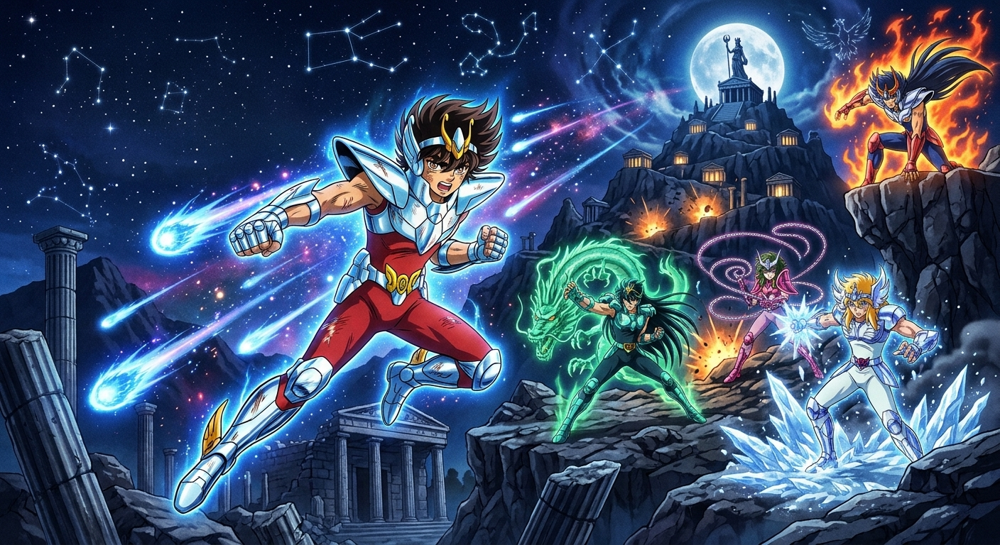
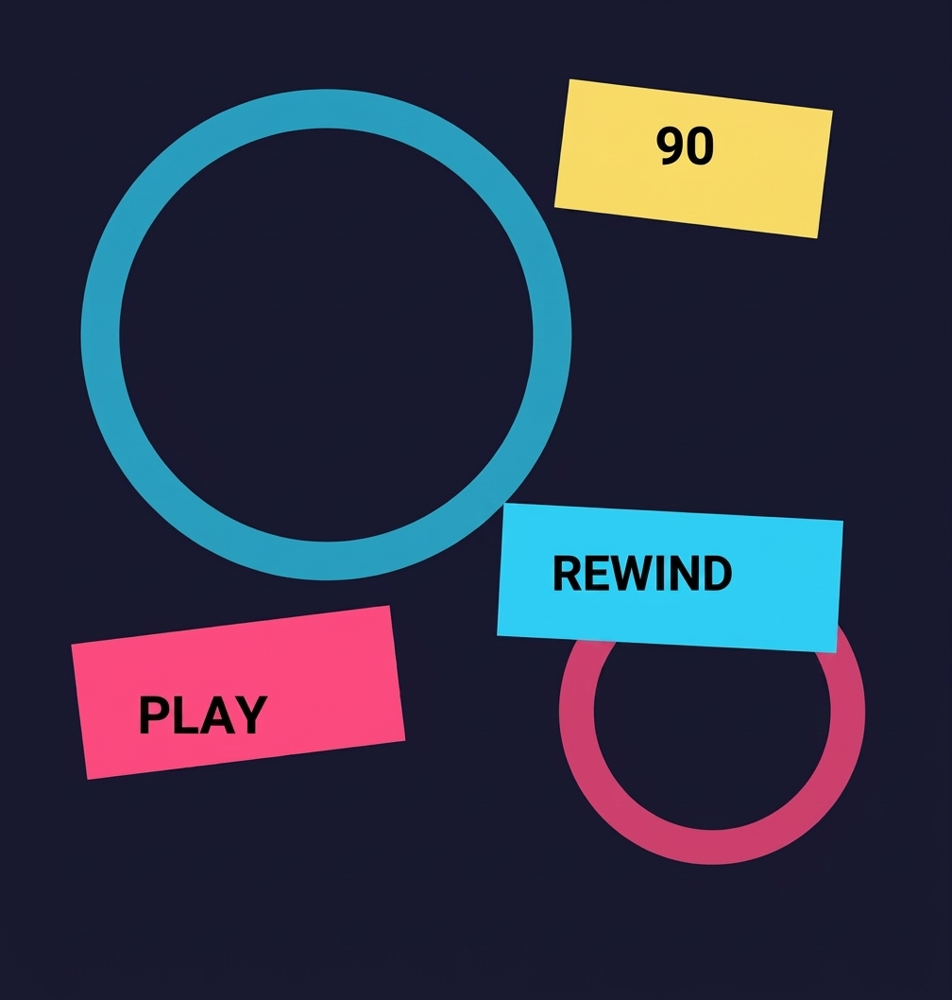
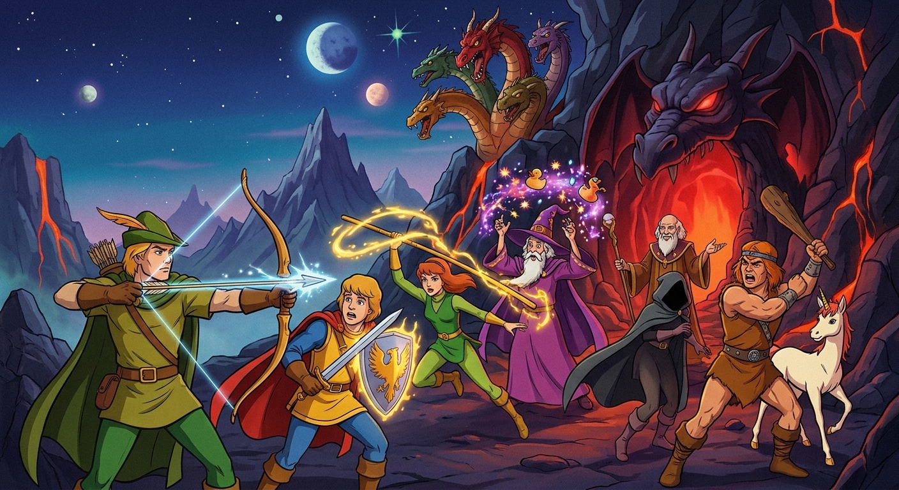
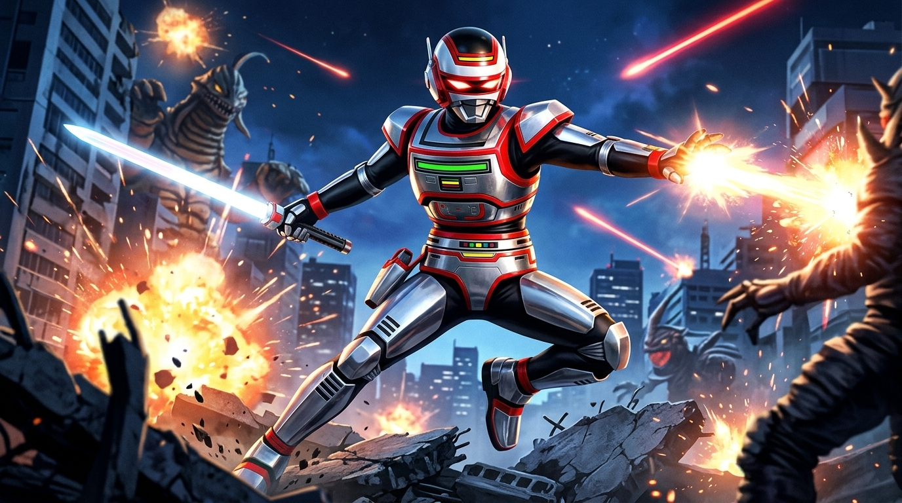
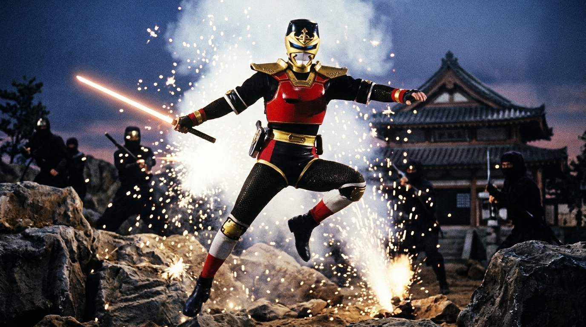
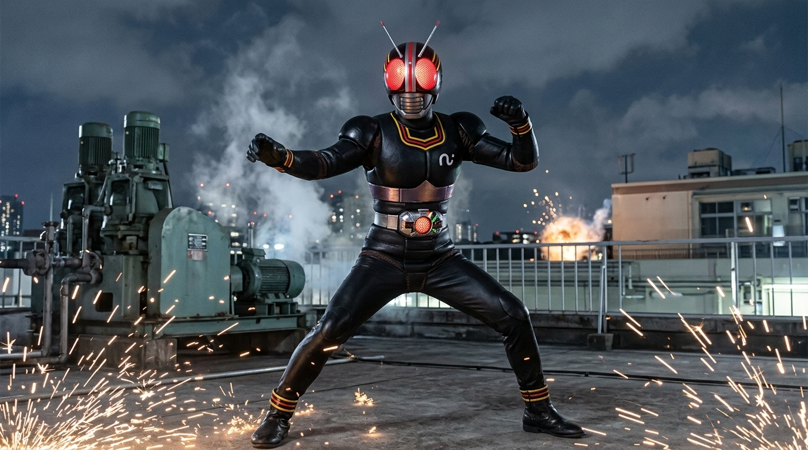
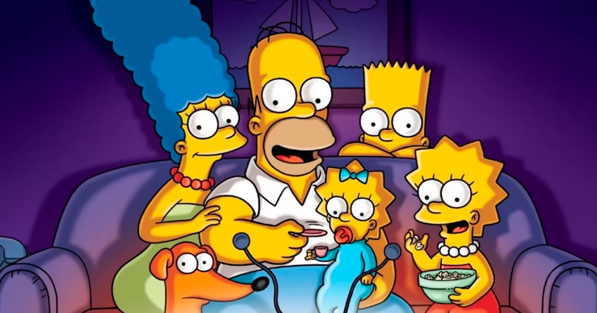
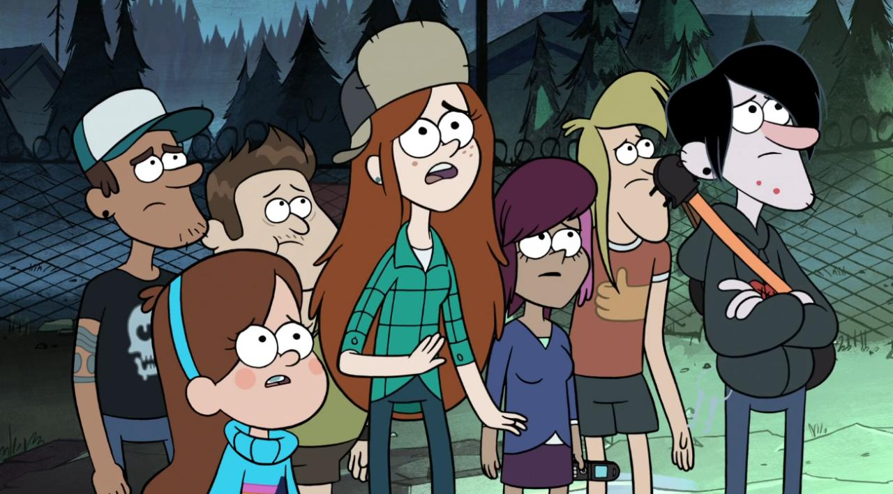

1986
80 • 90 • 2000
Uma viagem pela TV, pelos heróis e pelas animações que transformaram tardes comuns em grandes aventuras.

ANTES DOS ANOS 90
Duas produções anteriores aos anos 90 que permaneceram vivas na memória de quem cresceu cercado por fantasia e aventura.

1986

1983
FAIXA ESPECIAL
Tokusatsu, ação e personagens que viraram memória afetiva.

METAL HERO

NINJA HERO

TOKUSATSU
O PASSADO CONTINUA PRESENTE

CONTINUAÇÃO
CULTURA POP


MISTÉRIO
FIM DA FITA?
Algumas histórias envelhecem. Outras viram memória.